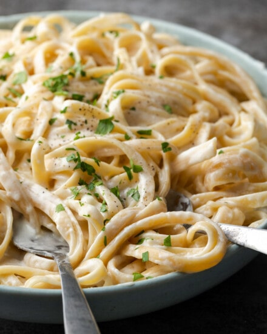

Fettuccine Alfredo

Description
Fettuccine Alfredo is a creamy pasta dish made with fettuccine noodles, butter, and Parmesan cheese. It's a rich and indulgent meal that is simple to prepare and perfect for a comforting dinner.
Ingredients
- Fettuccine
- Butter
- salt
- Parmesan cheese
Steps
- Cook the fettuccine according to package instructions until al dente.
- In a large skillet, melt the butter over medium heat.
- Add the cooked fettuccine to the skillet and toss to coat in the butter.
- Sprinkle in the Parmesan cheese and continue to toss until the cheese is melted and the pasta is creamy.
- Season with salt to taste and serve immediately.
Home